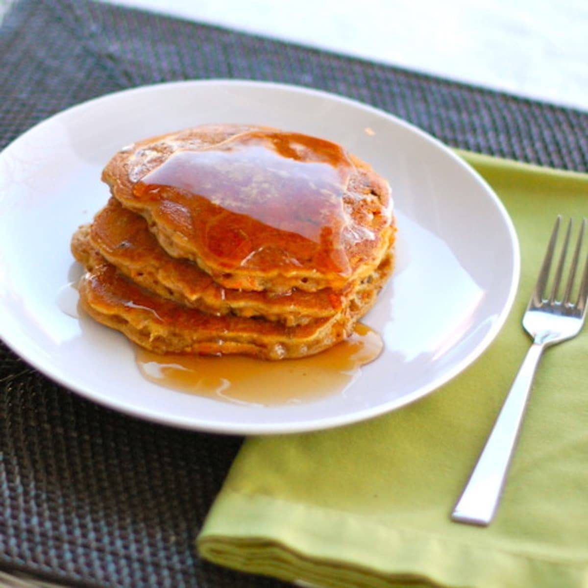

Cinnamon Apple Carrot Pancakes

Description
These cinnamon apple carrot pancakes are super thick and filling – a perfect way to enjoy your apples and carrots in yummy breakfast form!
Ingredients
- 1 3/4 cups raisin bran cereal
- 1 1/4 cups all-purpose flour
- 3/4 cup sugar
- 1 1/4 teaspoons baking soda
- 1 teaspoon ground cinnamon
- 1/4 teaspoon salt
- 1 egg
- 3/4 cup buttermilk (+ extra milk to thin the batter)
- 1/4 cup canola oil
- 3/4 cup finely chopped peeled tart apple
- 3/4 cup grated carrots
Steps
- In a bowl, combine the first six ingredients. In a small bowl, beat the egg, buttermilk and oil. Stir into dry ingredients just until moistened. Fold in apple and carrots.
- Pour 1/3 cup of batter onto a griddle on medium heat. Wait until the bottom side of the pancakes stick together enough to flip over. When pancakes have cooked through, remove and top with butter and maple syrup!
- This is technically muffin batter, so it makes very thick pancakes. I added a little extra milk to try to thin the batter out a little bit. The pancakes do not cook like regular pancakes – they take longer and do not flip as easily. But they do taste delicious! If anyone knows of a good pancake “base” recipe that would work well for adding carrots, apples, and raisin bran… let me know!